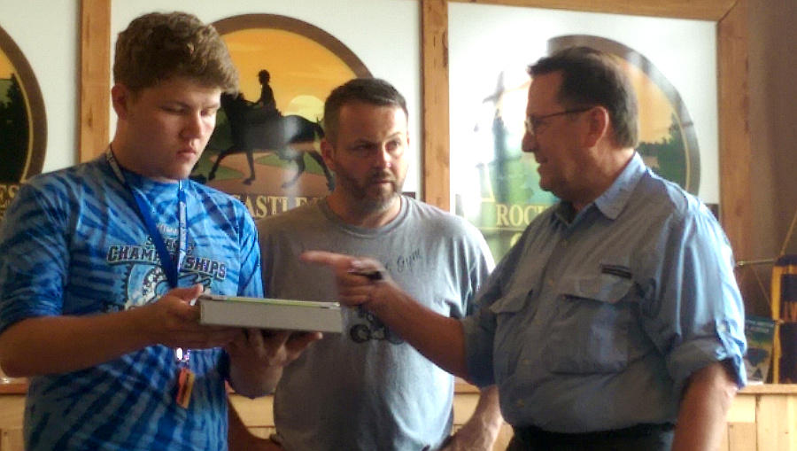
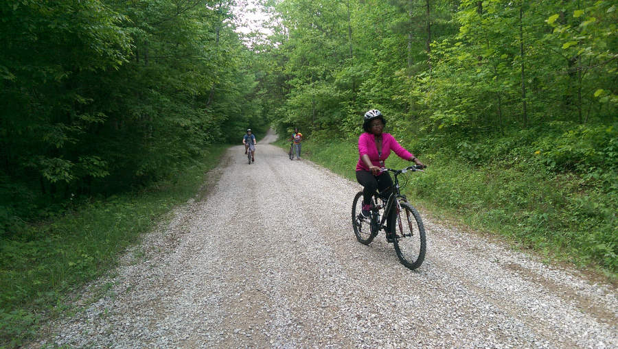
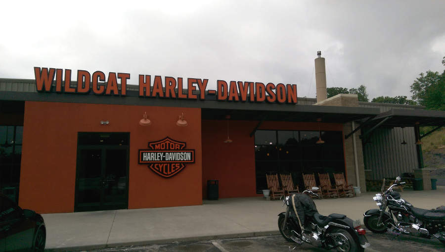
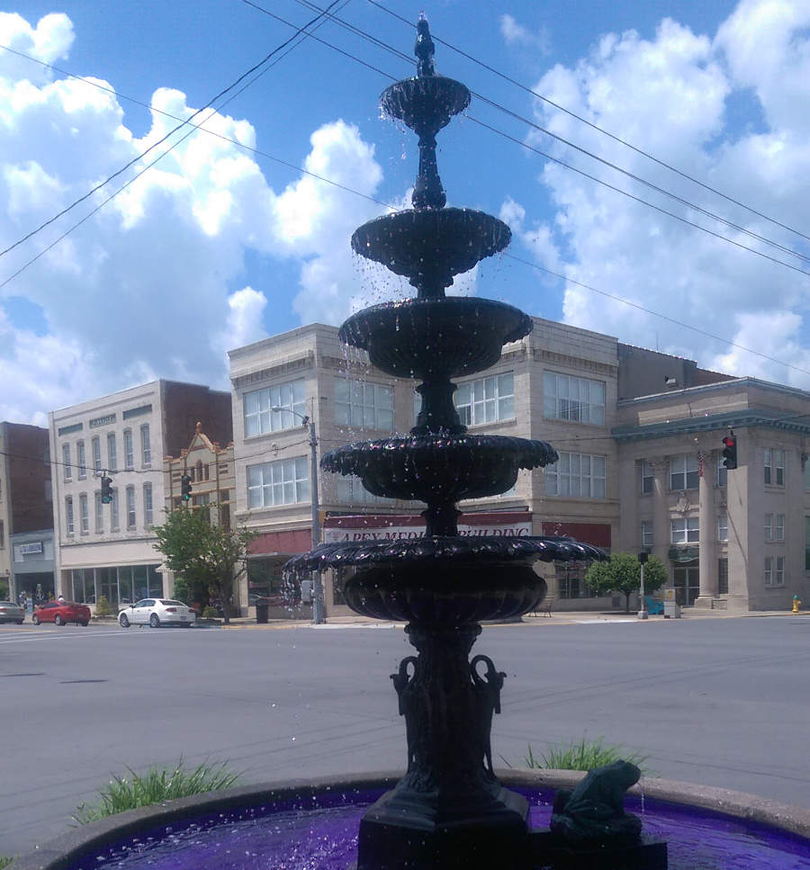
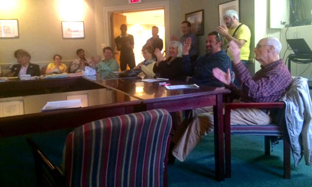

Day 1
We set out early Monday morning to Livingston, KY a small town of 280 people to have our first out of the building experience and check out the trails and rivers of the area. We heard first hand from Mayor Jason Medley of Livingston how such a small town functions and the kinds of economic and moral improvement that he brought to the town. He told us a time when he was contacted by a citizen concerning a problem with their water pump. With no plumbers nearby, the mayor was the first to contact about the issue. Jason said he answered the call by arriving at the caller's house with tools in hand and worked with the person to fix the pump. Jason made it clear that all civil work is unpaid volunteers and that even his own work as mayor goes unpaid. Jason mentioned that there are only five businesses operating within the 42 acres under Livingston's dominion. A feed and seed store, the Main Street Diner, A Variety Store, City Hall, and a barbers shop where the mayor also cuts hair and makes the majority of his money there.
 Mayor Jason Medley (middle), Peter Hackbert (right), and Will Bowling (left).We spoke to and explored 3 of the businesses there. The Main Street Diner was recently under new management and has changed hands many times. We ate there before hitting the trails and rivers the food was adequate and staff was friendly. The Variety Store had an interesting story. The owner bids on storage lots both online and in person in Louisville and Lexington and sells whatever she ends up buying in her store. She said she was watching "Storage Wars" on TV, a series where two men travel the US using a similar business model. The owner says that the business has been successful enough to provide for her family for 3 years and has given her something to do. City Hall was built inside the abandoned school on main street. Jason revealed to us that the school was shut down due to funding and the students relocated to another district. The school was renovated in the last few years by the mayor, volunteers and labor from the local jail.
Our group of 20 was divided into 3 groups that would experience the hiking trail, biking trail and kayaking rapids and report their findings to the others. I had registered to bike along with 4 other students. The biking portion was just recently added to the list of outdoor activities offered by the town of Livingston but they also had a horseback riding option that was not available for us at the time. The biking group commandeered 5 bikes and helmets, loaded up the pickup truck of the owner of the "Just Kik-n-it Ranch", the outfitter responsible for our adventures, and rode out the the top of the trail we would be biking. Our guide designated me as the "captain" of the group, making me responsible for keeping the group together.
The start of the trail was steep downhill and although I and two others made it down the slope with only slight use of the squeaky, unkempt brakes on the rather dinky bikes they provided us, we noticed that we were missing two. Upon climbing the hill we found that two of our team-mates had wiped out on the first hill. One, Dustin, sustained scrapes on his left hand, elbow and knee. The other, Andrea, had a cut on her left hand and bruises on hip and legs. Needless to say, the rest of the trip was slow going. Dustin's bike had broken its seat with the crash. I offered to trade with him since I am accustomed to riding without a seat.
I ended up guiding the team through the rest of the 5 mile trail. I would repel the myriad of dogs that approached us as we had two in our team that were morbidly afraid of dogs. For a while we were lost as we were not sure if we should diverge from the main trail and follow the trail by some train tracks or to continue on the main trail. we followed the main trail to a dead end in somebody's yard and were again approached by a half dozen dogs. We quickly backtracked and took the path at the train tracks. It was about this time that another team-mate's bike, Adriana's, suffered a broken pedal. I watched as under normal use the pedal just fell off. I tried to fix it but the threads were stripped on the end of the pedal and could not be fixed on the trail.
We walked the rest of the trail and flagged down a car that was approaching us to ask for directions to Livingston. The kind gentleman in the blue vintage Chevy told us to follow the trail and to take a right on the highway. He gave us an unopened bottle of water to share as he could probably see the thirst and dehydration in our eyes. We thanked him graciously and headed onward to the highway where we walked for a good 2 more miles on a slight incline to the town of Livingston where we recounted our journey to our cohort. We rode back to Berea and attended a night session with Dr. Hackbert to do an exercise to work to discover what our own "Work on Purpose" is.
Day 2
After we finished discussion with Johnny, Hackbert introduced to us the role of social media platforms (Facebook, Tripadvisor, and Yelp) in bringing business to local enterprises. Facebook posts about events you are attending can drive traffic to those events from your friends and increase awareness of an issue like eco-tourism. Tripadvisor and Yelp are key platforms for writing reviews of destinations and businesses that are viewable for thousands of interested people worldwide. A positive review of a local coffee shop could be the deciding factor for driving a tourist to it rather that a chain store.
Tuesday we headed to Middlesboro KY. On the way we stopped in London, KY for Starbucks Coffee and we also visited a state park/campground to see an example of a 18th century settlement that was reconstructed there. We also stopped at Wildcat Harley Davidson in London KY to gain insights about a potential tourist customer segment: bikers. Wildcat has earned several state and national awards for its successful business practices and earnings. We spoke to the manager of the store who told us that bikers are reported to be the biggest tippers, friendliest guests, and leave the cleanest hotel rooms. We used this information later on Thursday.
We arrived in Middlesboro and ate at the Avenue Cafe. I was instantly impressed by the small town. It has a population of about 10,000 and its main street is reminiscent of a booming 19th century town. I was impressed by the apparent art culture in the town. All the glass shop windows had amazing window paintings and the brick buildings were plastered with artistic posters and murals. At the center of town were four identical fountains each on one of the four blocks at the intersection in the middle of town. We visited a professional bike and outdoor shop that had just opened a few weeks ago. Crater City Adventure offered professional high-dollar equipment for bikers, skateboarders, campers, hikers and rock climbers. We learned that the name "Crater City Adventure" comes from the myth that the bowl-shaped valley that Middlesboro resides in was formed by a meteor millions of years ago.
We then left Middlesboro for a few hours to check out the Cumberland Gap museum and trail. We watched a movie at the museum detailing the history of the Cumberland Gap and Daniel Boone's westward journey. The museum had a gift shop with appalachian crafts and art. I found several brooms and woodcrafts from Berea College. We took straight from the museum to the trail where we hiked a good 2 miles to the "saddle" of the Gap then 2 more miles back. We went back to Middlesboro to attend a town meeting concerning the trailtown status of Middlesboro and to listen to a presentation by a University of Kentucky Landscaping Architecture student who, for her capstone project, worked with a team of students to redesign several parts of Middlesboro to increase visual, functional and environmental appeal.
We left Middlesboro for the 2 hour drive back to Berea and stopped at Dino's Italian Restaurant in Corbin, KY for a late dinner at 8pm. We got back to Berea around 12am.
Day 3
Super tired from driving/traveling for the last two days, I dragged myself to class to hear again from our adventure tourism expert, Johnny Malloy, via a skype call. Johnny let us know some of the key things that tourists look for in a business and what businesses can do to increase their customer base and make the experience better for the tourist. These include offering free WiFi, maintaining and pushing social media platforms, having adequate signage, and providing amenities that can increase content created and shared during the experience like offering waterproof bags for phones for those doing water sports.
We heard presentations from the several students who spent the weekend in Damascus, VA at the Trail Festival. They reported on the kinds of tourists and customer segments present at the event. They interviewed and reported on the kinds of spending habits they were able to ascertain from the interviews. One student reported that Damascus had city-wide free municipal Wi Fi and fiber gigabit internet infrastructure was currently present in the city which I thought was an amazing feat for a small city.
In the night session we worked to assemble a presentation to give at Berea City Hall to several of the most successful business owners in Berea to urge them to join a Merchants Committee that is needed as part of the application process for Berea becoming a trail town. This presentation needed to show the merchants why Berea becoming a trail town would benefit them and what joining a Merchant's Committee would mean for them.
Day 4
We heard a summary from the Dean of Berea College, Chad Berry, of the history of Appalachia where he confirmed the myth that the Middlesboro crater was formed from a meteor impact.
The presentation to the Berea merchants was to be given today at 5:30pm and we worked on finishing up our presentation and choose three individuals to actually deliver the presentation. In the end, I was chosen along with Geurds, and Malika. We had three hours to practice the presentation which was to be thirteen minutes long. The presentation was fairly title and data intensive meaning that it was crucial to get names of towns, events, and committees correct as well as precise statistics and numerical figures. We used our iPads as reference while giving the presentation and at the end I was charged with giving the final "ask". I pleaded to the merchants to raise their hand and sign up for the committee and before I could even finish, they began raising their hands. This was a great feeling of accomplishment and after the presentation several sign-up sheets were passed around to the merchants.
 The merchants starting to put their hands up at the end of our presentation.Dr. Hackbert was impressed with our efforts and treated the entire cohort to coffee at Berea Coffee and Tea, owned by one of the merchants who signed up to the committee.
Day 5
Friday we took it easy. We worked to polish the presentation slides from yesterday so that we could deliver the same presentation again if needed to a variety of audiences.
After lunch, we heard from fifteen students who were giving presentations comparing their home county in Appalachia to an assigned county in Eastern Kentucky so that we sould get a feel for the economic dependencies, and population of the kinds of counties we will be working with later in the summer.